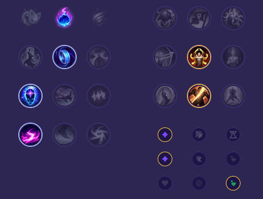

Starter: Pierścień Dorana 2x Mikstura Zdrowia Core Bulid: Towarzysz Luden Buty Maga Płomień Cienia Full Bulid: Zabójczy Kapelusz Rabadona Klepsydra Zhonyi Banshee's Veil

Słaby przeciwko: - Katarina - Ekko - Kassadin - Zed - Zoe - Xerath Dobry przeciwko: - Syndra - Orianna - Yone - Sylas - Galio - Akshan